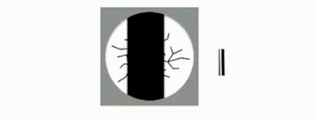

Serendipitous connections applying explanations from AI to the brainTL;DR A small shift in perspective helps interpret the ventral stream in the biological brain as the residual stream from ResNets. Experimental… |
Updated | ||
|---|---|---|---|
| Author | Jan Kirchner | ||
I recently read the new Transformers Circuit work by Elhage et al. at Anthropic. While I am in no position to judge the importance of the paper for AI, (not that this has ever stopped me from sharing my opinion before) the paper made me connect some ideas from neuroscience that I couldn’t connect before. This post is capturing those connections. I’m not sure if all of this is novel[1], but it was novel to me!
[1]
I fully expect someone to tell me: Oh, that’s the “The-Brain-Is-A-Residual-Stream” theory from Smith et al. 1986.
If you just want to read the idea, feel free to skip to the section “Put it together, it just makes sense”. If you know a bit of neuroscience, but no machine learning, skip to the section “The Residual”. If you know a bit of machine learning, but no neuroscience, continue with the sections “Visionary Hierarchy” and “Not the full story”. If you want everything , just keep reading.
There is this idea floating around since at least Hubel and Wiesel that information processing in the brain is hierarchical , in the sense that there are “lower” and “higher” levels of information processing. I will call this broad idea the “naive hierarchical brain theory” or NHBT to indicate that probably very few people believe exactly this.
Ventral stream. One particularly well-studied example of the NHBT is the “ventral stream”:
a pathway that carries visual information from the primary visual cortex to the temporal lobe.
Hierarchical processing in the ventral stream. (Manassi et al 2013)
The ventral stream is concerned with extracting properties of objects from the “raw input” from the retina. The NHBT suggests that
In animals that care about faces, we then move on to the inferior temporal cortex (IT) to represent faces and Jennifer Aniston, in particular. Once we’ve reached this very high-level representation, we might implement certain high-level behavioral strategies like
see tiger -> run awayor
see grandmother -> don't run awayBuilding neural representations. A central idea of the NHBT is that higher-level representations are “assembled” from lower-level representations. In particular, the edges detected in the primary visual cortex are assembled from smaller, circular representations in the LGN.
LGN receptive fields (orange blobs on the left) are pooled from multiple LGN cells to a V1 cell (right) and form a spatially-elongated, edge-selective receptive field (dashed line on the left).
This particular circuit has already been proposed by Hubel and Wiesel in 1962 and has decent experimental evidence (Reid and Alonso, 1995;Sedigh-Sarvestani et al, 2017). We also understand a lot about the cortical dynamics of how this comes about from smart electrophysiology experiments (Lampl et al., 2001), from looking at all the inputs of pyramidal neurons (Rossi et al., 2020), and by modeling this to death (Carandini and Ringach, 1997[3]).
[3]
And a lot more. Even your’s truly has a model that can do this! (Kirchner and Gjorgjieva, 2021).
After getting orientation selectivity in V1 there is less agreement about how to get shapes, objects, and faces in the higher-order cortices. My favorite work on this topic comes from David Marr (1982), but I can’t find super strong experimental evidence that teases apart a circuit implementation[4].
[4]
This looks relevant however,Verhoef et al., 2012.
Canonical circuits for assembling representations. However, perhaps an exact implementation is also not necessary. There is a hand-wavy, standard circuit-level explanation referred to as the “canonical microcircuit” (Shepherd, 2011). In its simplest[5] form, the theory describes the information flow through the six layers of the cortex. Lower levels (f.e. LGN) project to neurons in layer 4, from where the information gets forwarded to layer 2/3[6], from there back to layer 5, and from there to the next level in the hierarchy.
[5]
i.e. only reasonably useful,
[6]
If you wonder why there is no mention of layer 1 or layer 6, and why layers 2 and 3 are lumped together - that is also the fault ofthat guy in 1909…
Schematic of the six layers of the cortex. Eight sample neurons are displayed that receive input from the previous level of the hierarchy (blue), perform recurrent processing (black), and output the result to the next level of the hierarchy (brown). Based on Kast and Levitt, 2019.
We can therefore think of layer 4 as the “input” layer and layer 5 as the “output” layer. Cells in layer 2/3 are highly interconnected and form a type of reservoir for performing computations. Exactly what kind of computation this circuit performs is still under debate, but there are plenty of ideas floating around (see f.e. Sadeh and Clopath, 2021). In the NHBT, layer 2/3 might be responsible for combining lower-level representations to form higher-level representations.
Strength of the NHBT. There is also a lot of inspired work at the intersection between machine learning and neuroscience, where the representations that emerge in deep artificial neural networks are compared with those in the brain (Yamins et al., 2014). And, almost fully in the land of AI, there is the Circuits work by Olah et al. (2020) that “zooms in” on different levels in a deep convolutional network to identify and interpret the motifs that give the network its umpf[7].
The whole story is very appealing for many reasons:
It’s a simple theory with lots of experimentally-testable predictions.
It resonates nicely with the philosophy of reductionism.
It goes back to Hubel and Wiesel, which is a kind of magic incantation that bestows credibility.
I’m not saying that anybody is saying that the NHBT is the full story[8]. But it’s certainly an influential story that a lot of people take as a starting point for building more complicated models. I’m certainly using the NHBT a lot when I need high-level intuitions for how sensory processing works. However, there are also a bunch of puzzle pieces that I’ve collected over the years that don’t fit at all.
[8]
I’d perhaps argue that the situation is even worse and that people don’t have a theory concrete enough to be wrong, but that would just bog us down at this point.
Redundancies. I’ve laid out above how the representation of edges emerges in the primary visual cortex from combining simpler features from the LGN. Well, it turns out that 35% of retinal ganglion cells in the eye already encode edges (Baden et al., 2016).
A schematic of a retinal ganglion cell with bars moving across it to indicate visual flow. Black bars on the side indicate the generated action potentials of the cell. Note how only certain directions of the bars induce substantial action potential firing. Stolen from Rivlin-Etzion et al., 2012.
In fact, researchers are constantly trying to one-up each other in the number of different things that are encoded already at the retina (spatial contrast, color, motion, flicker, fine and coarse textures, absolute light level, … Kim et al., 2021). Note that this is before the stimulus has even reached the LGN. In fact, the same mechanism that computes the direction of moving edges in the cortex (Rossi et al., 2020) has been identified a decade earlier in the retina (Briggman et al., 2011).
From the NHBT perspective, this is just wasteful! Why would you compute a representation of edges already at the earliest stage of your hierarchy and then do the whole thing again three steps later? Even worse, it turns out that at later stages in the ventral pathway, there are still cells that only encode edges (Olcese et al., 2013). There are ways we can try to explain this away[9], but prima facie this is just inconsistent with the naive perspective.
[9]
Maybe the cortex is just doing this better than the retina? Perhaps the computation in the retina is for rapidly filtering out useless input that doesn’t even need to be sent to the cortex? After all, there is a bottleneck (the LGN has much fewer neurons than the retina or the primary visual cortex) that the information needs to be passed through.
Input, Output, all the same. Also, get this: The supposed “output” layer 5 of the cortex also receives the same input as the “input” layer 4 (Constantinople and Bruno, 2013)! If you carefully combine your lower-level representation to a higher-level representation through the layer 2/3 -> layer 4 -> layer 5 pathway, why would you slap on the original, lower-level representation in layer 5 again?
As the schematic before, but now with an additional “shortcut” connection that connects the input directly to the output unit.
There are a lot of other connections[10] that are not drawn into this diagram, but none of them are quite as strikingly inconsistent with the NHBT[11].
[10]
My favorite resource comes from the Allen Brain Institutehere.
[11]
In particular, each transmission from one cell to another induces a temporal delay of a few milliseconds. This might be negligible for most macroscopic behavior, but for neural circuits timing matters. Directly feeding the input into the output messes this up, big time.
The problem with grandma. Remember that thing about Jennifer Aniston and the grandmother from the previous section? Yeah, turns out that’s super controversial to the point where some call it a failure and a myth (Barwich, 2019). Where the NHBT suggests that at the top of the hierarchy we find neurons coding for single, complex concepts, the reality in the brain looks different. Instead of a cell-to-concept correspondence, complex concepts are encoded combinatorially (Quiroga et al., 2008):
Neurons might fire selectively in response to highly specific stimuli, such as Halle Berry. But this is not the only stimulus to which they respond. Additionally, sparse coding does not show the encoding of particular stimuli as separate or isolated entities. Instead, it builds a network of associations between familiar items: While a limited number of neurons responded to specific stimuli (say, pictures of Jennifer Aniston), these cells also responded selectively to specific stimuli known from the same context (namely, Lisa Kudrow, the actress starring next to Aniston in the sitcom Friends ). (Barwich, 2019)
This means, in particular, that it does not make a lot of sense to talk about one particular stimulus that is encoded by a cell in the higher levels of the hierarchy. Cells need to be interpreted in the context of their local network.
While this is not fully inconsistent with the NHBT where representations in the visual cortex are assembled from simpler representations in the thalamus[12], it requires an additional component to explain why this scheme does not apply to the highest levels of the hierarchy.
[12]
It could be that at lower levels in the hierarchy, the receptive field of a cell can still be defined, and only at higher levels, it falls apart.
Degraded performance in deep networks. We now dive briefly into the ancient history of machine learning, all the way back into the year 2016[13]. Up to this point, steady progress in machine learning meant improving relatively “shallow”[14] networks (< 25 layers) to squeeze out more and more performance on the ImageNet classification dataset. Intuitively, we might expect deeper networks to perform better (more layers should allow more computation), but this didn’t bear out in terms of performance. Making networks deeper actually degraded performance.
[13]
The field is moving fast.
[14]
People at the time probably did not think these networks were “shallow”.
Schematic of the training error as a function of the total number of layers in the network. The blue line indicates what deep learning theory would predict, the red line indicates what was observed before the invention of ResNets.
The reason for this degradation problem, people speculated, was that gradients tend to vanish or explode in deeper networks, which makes training unstable.
ResNet to the ResCue. This changed when the ResNet architecture (He et al., 2016) was introduced:
ResNet, short for Residual Networks is a classic neural network used as a backbone for many computer vision tasks. This model was the winner of ImageNet challenge in 2015. The fundamental breakthrough with ResNet was it allowed us to train extremely deep neural networks with 150+layers successfully. (Dvivedi, 2019)
The central intuition for what they did is straightforward: If your shallow network achieves good performance, adding additional components should just apply the identity transformation and forward that good solution to the output. Since they are not doing that, they must be struggling to “learn” the identity transformation. We can help them by adding a “skip connection” that, by default, implements the identity:
Strongly simplified schematic of the ResNet structure. Computations are typically nonlinear.
This worked pretty well, winning a lot of competitions, and enabling what Gwern calls the “blessing of scale”:
So, the larger the model, the better, if there is enough data & compute to push it past the easy convenient sub-models and into the sub-models which express desirable traits like generalizing, factorizing perception into meaningful latent dimensions, meta-learning tasks based on descriptions, learning causal reasoning & logic, and so on. If the ingredients are there, it’s going to happen. (Gwern, 2020)
These skip connections also happen to be one of the central components of the transformer architecture (Vaswani et al., 2017) that is currently revolutionizing machine learning.
Residual stream interpretation. The “vanishing gradient” motivation for using a Resnet is the go-to explanation for when and how skip-connections work. There is, of course, another way of looking at this. Welcome to the stage, Elhage et al., 2021.
Rather than interpreting the skip connections as a solution to a problem, they evaluate them as an important component of the transformer in its own right. In particular, they observe that the chaining together of multiple skip connections (a “residual stream”) opens the door to a range of interesting new computations. They say it much better than I could:
One of the main features of the high level architecture of a transformer is that each layer adds its results into what we call the “residual stream.” The residual stream is simply the sum of the output of all the previous layers and the original embedding. We generally think of the residual stream as a communication channel, since it doesn’t do any processing itself and all layers communicate through it. The residual stream has a deeply linear structure. Every layer performs an arbitrary linear transformation to “read in” information from the residual stream at the start, and performs another arbitrary linear transformation before adding to “write” its output back into the residual stream.[15]
[15]
Something interesting happened to my mind, where I now cannot un-see this interpretation anymore. I feel convinced that something about the old “vanishing gradient” explanation was unsatisfactory, but that I couldn’t put my finger on it. Hindsight is, of course, 20/20.
Interpreted as a “residual stream”, it is clear that later information computed early on is still accessible later in the stream[16].
[16]
As long as the information is not overwritten.
Schematic illustrating same situation as in the previous figure, but now with the skip connections chained together and labeled “residual stream”. The thick orange band indicates that the residual stream has a limited, but high-dimensional bandwidth.
In addition, there is a kind of “memory management” that becomes possible through the residual stream: computational units later in the stream can “pick up and continue” the output of previous units, and then copy, modify, delete, or merge them. Presented like this, it is clear that the residual stream might be more than just a “solution to the problem of degrading performance”, and that the residual stream is intimately involved in the complex calculations performed by deep networks.
If you’ve read the previous two sections back-to-back you can probably already predict where I’m going: Perhaps we shouldn’t be thinking of the steps in the ventral stream as successive levels of a hierarchy , but instead, we should think of them as reading from and writing into a residual stream. Instead of levels in the hierarchy, we think of stations in the stream. Instead of merging representations, we operate on portions of the stream. It’s just a small shift in perspective, but we can get a lot of mileage from it.
Ventral stream illustrated with a residual stream.
Modelpostdictions. Under this model,
the original input ought to be added to the computed output, consistent with what we know about the direct thalamocortical input onto layer 5 of the cortex (Constantinople and Bruno, 2013). This also happens to be one of the hallmark features of the “Dendritic Gated Networks” recently proposed by Sezener et al. (2020). As schematic before, but with input and output merged into a residual stream.
representations would still look somewhat hierarchical: as later processing steps of the stream receive the output of earlier steps as input, complexity[17] of the representation will increase at later stages in the stream. However, the hierarchy is a lot more flexible, and can dynamically route intermediate outputs from all levels to the end of the stream. Schematic illustrating that later stations in the stream might still have access to all previously computed intermediate results.
[17]
As measured by the degree of processing of the information.
computation is highly flexible. Depending on the input statistics, the same cell might be recruited in a wide range of roles.
From receptive fields to sparse coding. Computations early in the stream mostly depend on the input. Computations later in the stream depend on both the input and on computations earlier in the stream. As a consequence, a cell early in the stream has a reliable “receptive field”, while cells later in the stream do not strongly bind to the input and can only be interpreted as a sparse code (Quiroga et al., 2008).
(Towards?) Turing-complete computations. The content of the residual stream might represent a type of flexible memory with contents that can be read, modified, deleted, or merged at different stages in the stream. We might expect this to allow for pretty complex computations, probably bounded below by the expressive power of the transformer architecture.
Representation overloading. This also happens to mesh extremely well with a recent proposal for biologically-plausible backpropagation from Sezener et al. (2020):
[External input to a neuron is] used for gating the weights: each neuron has a bank of weights at its disposal, and the external input determines which one is used. For example, a neuron might use one set of weights when the visual input contains motion cues predominantly to the right; another set of weights when it contains motion cues predominantly to the left; and yet another when there are no motion cues at all.
Model predictions. There are also experimentally-testable predictions[18]:
[18]
Or perhaps post-dictions, those claims seem plausible enough that I might have read them before.
When task-relevant, robust representations of simple stimuli (f.e. edges) should be found all along layer 5 of the ventral stream.
Variability of neural activity should increase not only in proportion to variability in the immediately preceding unit but in proportion to variability in all preceding units.
We might expect some degree of dynamic deleting and/or editing in layer 5, where a portion of incoming thalamocortical inputs are partially or fully canceled out by computed inhibitory input.
These shouldn’t even be too difficult to test (compared to, like, calcium imaging of dendrites in freely behaving animals).
Model limitations. While I’d argue that the “residual stream” interpretation explains strictly more about biology than the NHBT interpretation, there are still a bunch more puzzle pieces[19].
[19]
Of course, this is neuroscience after all.
But at least there are some interesting hints for how to continue:
And what about calcium waves in astrocytes? And axo-axonic synapses? And the fact that mice are basically blind? And …? Phew, great questions. I don’t know man. One step at a time.
If you want to subscribe (it’s easy, free, and will stay free), click the button <3
[2]
Look, theguy who came up with these areas in 1909 didn’t actually know what they were good for, so let’s cut him some slack.
[20]
Although most proposals I’ve encountered so far have been begging the question, just hiding the teaching signal in ever-more-clever places. Self-organizing networks are the notable exception (Kaschube et al., 2010).
[21]
The paper is not without flaws (the biological evidence is weak, the SARCOS dataset is contaminated to the point of non-usability, the results don’t quite deliver what they promise), but it has so many great ideas.